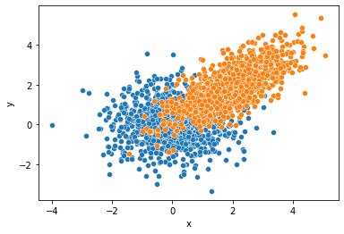
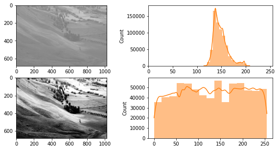

seaborn(2)–scatterplot, mpl미세먼지팁(2)
강의영상
https://youtube.com/playlist?list=PLQqh36zP38-xHObhZzebBIEf97Er27O_x
import
sns scatterplot
- data
- 이변량정규분포에서 샘플추출 (추출코드를 기억할 필요는 없음)
- 특징: x1,y1은 무상관으로 x2,y2는 선형관계를 가지도록 추출
plt 복습
sns: array
sns: wide df
sns.scatterplot(data=pd.DataFrame({'x':x1,'y':y1}),x='x',y='y')
sns.scatterplot(data=pd.DataFrame({'x':x2,'y':y2}),x='x',y='y')
#sns.scatterplot(data=None,x=x2,y=y2)<AxesSubplot:xlabel='x', ylabel='y'>
- 억지로 그리긴 했는데 이 경우는 wide하게 만든 df는 별로 경쟁력이 없음
sns: long df
x= np.concatenate([x1,x2])
y= np.concatenate([y1,y2])
cat = ['x1']*len(x1) + ['x2']*len(x2)
df2 = pd.DataFrame({'x':x,'y':y,'cat':cat})
df2| x | y | cat | |
|---|---|---|---|
| 0 | 2.023919 | -0.400176 | x1 |
| 1 | 1.229622 | -1.763752 | x1 |
| 2 | -0.413211 | 2.293004 | x1 |
| 3 | -1.343073 | 0.404232 | x1 |
| 4 | 1.062845 | 0.030775 | x1 |
| ... | ... | ... | ... |
| 1995 | 2.226805 | 3.683857 | x2 |
| 1996 | 2.768263 | 2.678292 | x2 |
| 1997 | 2.525295 | 2.815478 | x2 |
| 1998 | 1.750193 | 2.289812 | x2 |
| 1999 | 1.153290 | 2.095922 | x2 |
2000 rows × 3 columns
sns을 이용하여 matplotlib 액시즈에 그림 그리기 (\(\star\))
예제1
예제2
!wget https://upload.wikimedia.org/wikipedia/commons/0/08/Unequalized_Hawkes_Bay_NZ.jpg
img = cv2.imread('Unequalized_Hawkes_Bay_NZ.jpg',0)
!rm Unequalized_Hawkes_Bay_NZ.jpg --2022-10-05 16:33:56-- https://upload.wikimedia.org/wikipedia/commons/0/08/Unequalized_Hawkes_Bay_NZ.jpg
Resolving upload.wikimedia.org (upload.wikimedia.org)... 103.102.166.240, 2001:df2:e500:ed1a::2:b
Connecting to upload.wikimedia.org (upload.wikimedia.org)|103.102.166.240|:443... connected.
HTTP request sent, awaiting response... 200 OK
Length: 110895 (108K) [image/jpeg]
Saving to: ‘Unequalized_Hawkes_Bay_NZ.jpg’
Unequalized_Hawkes_ 100%[===================>] 108.30K 548KB/s in 0.2s
2022-10-05 16:33:57 (548 KB/s) - ‘Unequalized_Hawkes_Bay_NZ.jpg’ saved [110895/110895]
fig,ax = plt.subplots(2,2,figsize=(10,5))
ax[0,0].imshow(img,vmin=0,vmax=255,cmap='gray')
sns.histplot(img.reshape(-1),ax=ax[0,1],bins=15,lw=0,kde=True,color='C1')
ax[0,1].set_xlim(0,255)
ax[1,0].imshow(img2,vmin=0,vmax=255,cmap='gray')
sns.histplot(img2.reshape(-1),ax=ax[1,1],bins=15,lw=0,kde=True,color='C1')<AxesSubplot:ylabel='Count'>
- seaborn: figure-level vs axes-level 의 개념
ref: https://seaborn.pydata.org/tutorial/function_overview.html#figure-level-vs-axes-level-functions
mpl 미세먼지팁 (2)
축 간격조정
축 삭제
축 범위조정
gcf, gca
- gcf
- gca